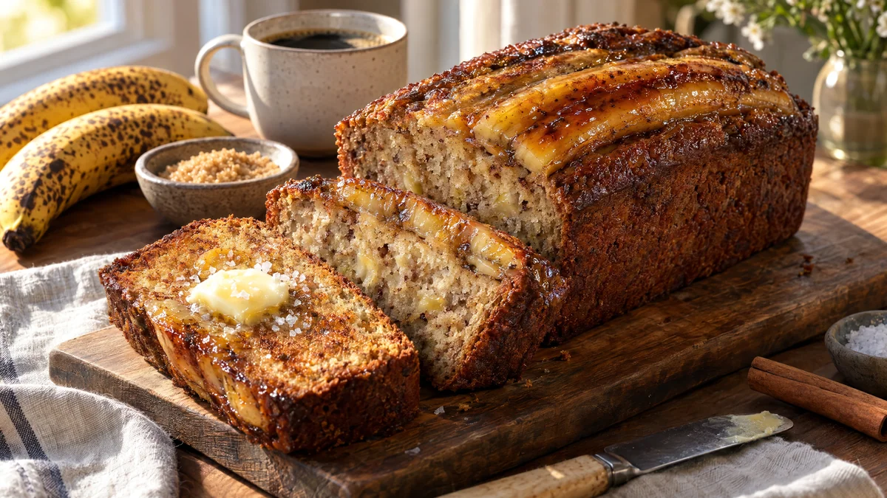

RESTFEST · RECEPTFika & bakning
Bananbröd med brynt smör och karamelliserad banan
De bruna, övermogna bananerna som ingen vill äta blir ett saftigt bananbröd med nötig smak av brynt smör. En banan delad på längden läggs ovanpå och karamelliseras till en blank, gyllene yta. Ser ut som från ett café i Köpenhamn.
- Förberedelse
- 15 min
- Tillagning
- 60 min
- Portioner
- 1 bröd (ca 10 skivor)
- Nivå
- Nybörjare
 Det här behöver du
Det här behöver du
Tryck på + vid det du behöver köpa.
Bananbröd
Topping
Gör så här
- Smält smöret i en kastrull med ljus botten på medelvärme. Rör då och då i 4–6 minuter, tills det är gyllenbrunt och doftar hasselnöt. Häll upp smöret med de bruna prickarna i en bunke och låt svalna i 10 minuter.
- Sätt ugnen på 175 grader. Klä en brödform (1,5 liter) med bakplåtspapper som når upp över långsidorna, så att brödet blir lätt att lyfta ur.
- Mosa de tre bananerna med en gaffel. Små bitar får gärna finnas kvar.
- Vispa farinsocker, strösocker, ägg och vaniljsocker ner i det brynta smöret tills smeten är slät. Rör ner bananmoset och filmjölken.
- Blanda mjöl, bikarbonat, kanel och salt i en annan skål. Vänd ner det i smeten med en slickepott, bara tills inget mjöl syns. Rör du för länge blir brödet segt.
- Häll smeten i formen. Dela toppingbananen på längden och lägg halvorna med snittytan uppåt på smeten. Strö sockret över bananen.
- Grädda i nedre delen av ugnen i 55–65 minuter, tills en provsticka i mitten kommer ut torr eller med några fuktiga smulor. Lägg en bit folie över formen efter 40 minuter om ytan mörknar för snabbt.
- Pensla den varma bananen med sirapen. Låt brödet svalna i formen i 15 minuter och sedan på galler.
Dekoration och servering
- Skär tjocka skivor tvärs över, så att den karamelliserade bananen syns som ett blankt band överst på varje skiva.
- Godast är en skiva som stekts kort i smör och fått några flingsaltkorn.
- Servera med en klick lättvispad grädde eller crème fraiche och en kopp kaffe.
- Brödet blir ännu saftigare dagen efter. Det håller 4–5 dagar inslaget i plast.
Mått och ugnstemperaturer
Måtten är svenska (dl, msk, tsk, krm). Ugnstemperaturerna gäller vanlig ugn med över- och undervärme; med varmluft, sänk med 20 grader.